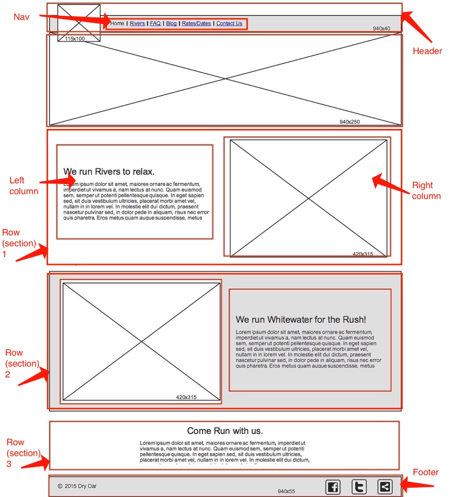

Complete The Home Page
In this assignment we are going to complete your Glitch sites home page. We did not tell you earlier but the wireframe assignment was the start of your home page. You should have completed building the HTML for the home page page during the week 3 wireframe assignment; the wireframe.html page. Use the HTML from the wireframe.html page and incorporate it into the HTML for your home page (index.html). Yes, this means you will delete a lot of the content from your home page. Do not delete the head section. You may have to merge some of the pages content.
Keep It Simple:
What you are doing here is a common occurrence in industry. Someone will give you a template or code file and you will copy that into the design you are creating. In this assignment wireframe.html is like a template file we have been given. All we need to do is copy that template into our index.html (home) page and then work on completing it according to the wireframe.
If you find yourself struggling with this assignment please review past assignments for help, check the troubleshooting page for assistance, and then follow these steps:
- Reach out to your study group for help.
- Note specifically what you are struggling with and see if you can find a solution or help online.
- Come with specific questions to our next class.
Assignment
-
Wireframe Changes
The design team has not had time to send you an updated wireframe but you have been told the design is 99% the same. Later in the day you final receive the following email:
Jane,
We have decided we will need the following links in the header navigation. The sites logo should act as the link back to the home page. Please make sure these are the only header links in the production site:- About Us
- Services
- FAQ
We have also decided not to use social media links in the footer, instead can you please replace them with these links:
- About Me
- Resources
- Position
- Wireframe
- Image
Thanks!
~Emma
Make these changes in the HTML for your index.html page now. Keep in mind that the About Us page is not the same as your About Me page which already exists. You may want to create empty pages for every link that does not have an existing page already. If you choose not to create empty pages now, make sure to still include the links in your HTML.
-
Add Content
Before we start to style our page it will be helpful to have content in place. When a website is missing content it makes styling hard because images and text usually alter the feel and flow of a web page. Web Developers usually use place holder images and text to mimic what the final site might look like. Thankfully for us, the design team has already created the content. Take a look at the Dry Oar Content page to see what we have to work with.
You will not use all of this pre-generated content and you may decide to create some of you own. Go ahead and add the appropriate text content and images to your home page following the wireframe design. A copy of the wireframe is in the next section if you need it.
-
CSS Grid
Now that you have the sites logo, links, images, and content in place lets actually organize the page to match the wireframe. If you forgot what the wireframe looked like you can review it in the collapsible section below:

Using your knowledge of CSS grid layouts, add CSS rule-sets and rules to your styles.css file to complete the home page. When you are done with this step your home page's layout should match the wireframe.
If you would like a refresher on how CSS grid works, W3Schools has a 3 part tutorial on CSS Grid Layout.
-
Publish
If you worked locally in VS Code for this assignment make sure your final code and files have been added to Glitch; don't forget to upload images into your Glitch project and update their
src. View the live Glitch site to make sure the web page displays correctly. Pay special attention to whether your styles are displaying correctly and all images are loading. Once verified, submit the URL to your live home page in Canvas.Don't forget you should validate your code before sending it to production (putting it on the internet for everyone to see). For HTML files you can use the W3C Markup Validation Service and for CSS files you can use the W3C CSS Validation Service.
Grading
You will be graded at your instructor's or teaching assistant's discretion on how well you followed instructions and made your home page match the wireframe.